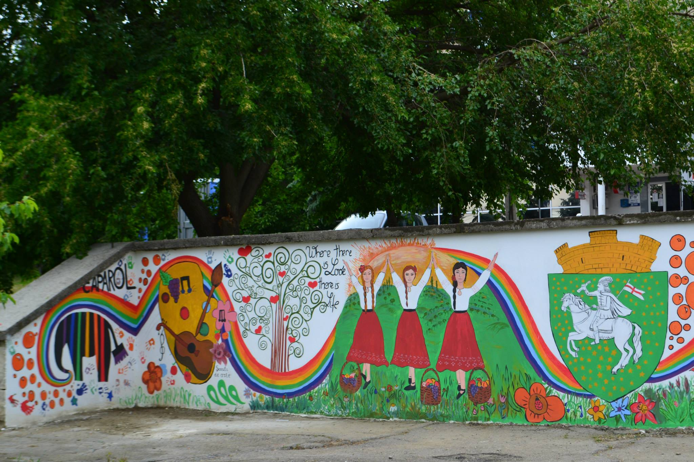
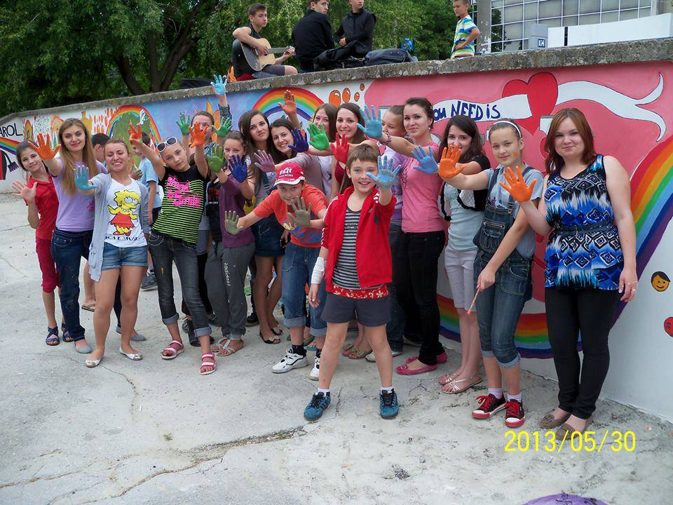
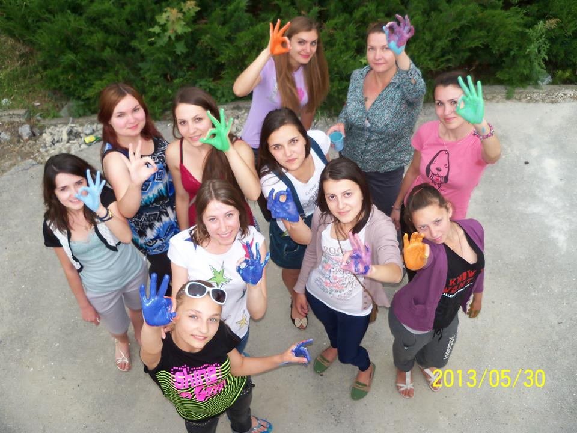

My name is Tatiana Marin. I was born and raised in Moldova, South Eastern Europe.
I'm very passionate about languages. I'm currently fluent in Romanian, Russian, English and I have a relatively high comprehession level in French.
I recently descovered that I love computer languages as well. I tried a few things in HTML and CSS and I felt that seeing the result of my work right away is very rewarding.
How Exciting!
| Monday | Tueday | Wednesday | Thursday | Friday | Saturday | Sunday |
|---|---|---|---|---|---|---|
| 1 | 2 | 3 | 4 | 5 | 6 | 7 |
| 8 | 9 | 10 | 11 | 12 | 13 | 14 |
| 15 | 16 | 17 | 18 | 19 | 20 | 21 |
| 22 | 23 | 24 | 25 | 26 | 27 | 28 |
| 29 | 30 |
I've been following eRadu NGO activity since their opening in 2011. And that is because they are the first NGO in my home town that works with kids. They don't have a website yet, but they are working on getting one. For now they are on Facebook only.
Here you can find them on Facebook
Here are a few pictures with their latest project
Picture of the mural
   Go to the Top
Go to the Top